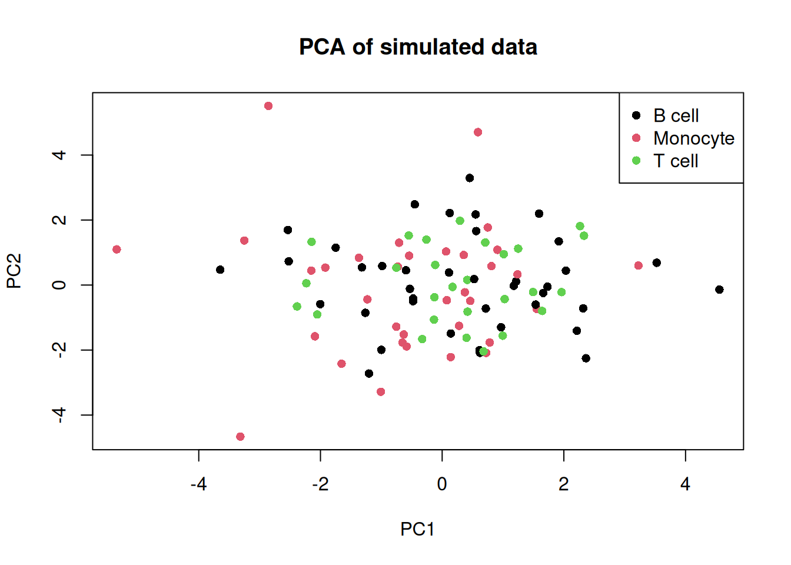

Last updated: 2026-02-16
Checks: 7 0
Knit directory: muse/
This reproducible R Markdown analysis was created with workflowr (version 1.7.2). The Checks tab describes the reproducibility checks that were applied when the results were created. The Past versions tab lists the development history.
Great! Since the R Markdown file has been committed to the Git repository, you know the exact version of the code that produced these results.
Great job! The global environment was empty. Objects defined in the global environment can affect the analysis in your R Markdown file in unknown ways. For reproduciblity it’s best to always run the code in an empty environment.
The command set.seed(20200712) was run prior to running
the code in the R Markdown file. Setting a seed ensures that any results
that rely on randomness, e.g. subsampling or permutations, are
reproducible.
Great job! Recording the operating system, R version, and package versions is critical for reproducibility.
Nice! There were no cached chunks for this analysis, so you can be confident that you successfully produced the results during this run.
Great job! Using relative paths to the files within your workflowr project makes it easier to run your code on other machines.
Great! You are using Git for version control. Tracking code development and connecting the code version to the results is critical for reproducibility.
The results in this page were generated with repository version b345a9c. See the Past versions tab to see a history of the changes made to the R Markdown and HTML files.
Note that you need to be careful to ensure that all relevant files for
the analysis have been committed to Git prior to generating the results
(you can use wflow_publish or
wflow_git_commit). workflowr only checks the R Markdown
file, but you know if there are other scripts or data files that it
depends on. Below is the status of the Git repository when the results
were generated:
Ignored files:
Ignored: .Rproj.user/
Ignored: data/1M_neurons_filtered_gene_bc_matrices_h5.h5
Ignored: data/293t/
Ignored: data/293t_3t3_filtered_gene_bc_matrices.tar.gz
Ignored: data/293t_filtered_gene_bc_matrices.tar.gz
Ignored: data/5k_Human_Donor1_PBMC_3p_gem-x_5k_Human_Donor1_PBMC_3p_gem-x_count_sample_filtered_feature_bc_matrix.h5
Ignored: data/5k_Human_Donor2_PBMC_3p_gem-x_5k_Human_Donor2_PBMC_3p_gem-x_count_sample_filtered_feature_bc_matrix.h5
Ignored: data/5k_Human_Donor3_PBMC_3p_gem-x_5k_Human_Donor3_PBMC_3p_gem-x_count_sample_filtered_feature_bc_matrix.h5
Ignored: data/5k_Human_Donor4_PBMC_3p_gem-x_5k_Human_Donor4_PBMC_3p_gem-x_count_sample_filtered_feature_bc_matrix.h5
Ignored: data/97516b79-8d08-46a6-b329-5d0a25b0be98.h5ad
Ignored: data/Parent_SC3v3_Human_Glioblastoma_filtered_feature_bc_matrix.tar.gz
Ignored: data/brain_counts/
Ignored: data/cl.obo
Ignored: data/cl.owl
Ignored: data/jurkat/
Ignored: data/jurkat:293t_50:50_filtered_gene_bc_matrices.tar.gz
Ignored: data/jurkat_293t/
Ignored: data/jurkat_filtered_gene_bc_matrices.tar.gz
Ignored: data/pbmc20k/
Ignored: data/pbmc20k_seurat/
Ignored: data/pbmc3k.csv
Ignored: data/pbmc3k.csv.gz
Ignored: data/pbmc3k.h5ad
Ignored: data/pbmc3k/
Ignored: data/pbmc3k_bpcells_mat/
Ignored: data/pbmc3k_export.mtx
Ignored: data/pbmc3k_matrix.mtx
Ignored: data/pbmc3k_seurat.rds
Ignored: data/pbmc4k_filtered_gene_bc_matrices.tar.gz
Ignored: data/pbmc_1k_v3_filtered_feature_bc_matrix.h5
Ignored: data/pbmc_1k_v3_raw_feature_bc_matrix.h5
Ignored: data/refdata-gex-GRCh38-2020-A.tar.gz
Ignored: data/seurat_1m_neuron.rds
Ignored: data/t_3k_filtered_gene_bc_matrices.tar.gz
Ignored: r_packages_4.5.2/
Untracked files:
Untracked: .claude/
Untracked: CLAUDE.md
Untracked: analysis/.claude/
Untracked: analysis/bioc.Rmd
Untracked: analysis/bioc_scrnaseq.Rmd
Untracked: analysis/chick_weight.Rmd
Untracked: analysis/likelihood.Rmd
Untracked: analysis/modelling.Rmd
Untracked: analysis/sim_evolution.Rmd
Untracked: analysis/wordpress_readability.Rmd
Untracked: bpcells_matrix/
Untracked: data/Caenorhabditis_elegans.WBcel235.113.gtf.gz
Untracked: data/GCF_043380555.1-RS_2024_12_gene_ontology.gaf.gz
Untracked: data/SeuratObj.rds
Untracked: data/arab.rds
Untracked: data/astronomicalunit.csv
Untracked: data/davetang039sblog.WordPress.2026-02-12.xml
Untracked: data/femaleMiceWeights.csv
Untracked: data/lung_bcell.rds
Untracked: m3/
Untracked: women.json
Unstaged changes:
Modified: analysis/isoform_switch_analyzer.Rmd
Modified: analysis/linear_models.Rmd
Note that any generated files, e.g. HTML, png, CSS, etc., are not included in this status report because it is ok for generated content to have uncommitted changes.
These are the previous versions of the repository in which changes were
made to the R Markdown (analysis/anndatar.Rmd) and HTML
(docs/anndatar.html) files. If you’ve configured a remote
Git repository (see ?wflow_git_remote), click on the
hyperlinks in the table below to view the files as they were in that
past version.
| File | Version | Author | Date | Message |
|---|---|---|---|---|
| Rmd | b345a9c | Dave Tang | 2026-02-16 | Using the anndataR package |
The anndataR package brings the AnnData data structure into R:
anndataR provides a native R implementation of the AnnData data model, enabling R users to read, write, manipulate, and convert .h5ad files without requiring Python dependencies for core operations.
The AnnData format is the standard container for single-cell genomics data in the Python/scverse ecosystem (used by scanpy, scvi-tools, etc.). anndataR bridges the gap between R and Python single-cell workflows by providing bidirectional conversion with both SingleCellExperiment and Seurat objects.
Install from Bioconductor.
if (!require("BiocManager", quietly = TRUE))
install.packages("BiocManager")
BiocManager::install("anndataR")Optional dependencies for reading/writing .h5ad files
and converting to other formats.
BiocManager::install("rhdf5")
BiocManager::install("SingleCellExperiment")
install.packages("Seurat")
install.packages("SeuratObject")Load package.
packageVersion("anndataR")[1] '1.0.1'suppressPackageStartupMessages(library(anndataR))AnnData stores single-cell data in a structured format with nine slots:
| Slot | Description |
|---|---|
X |
Primary expression matrix (observations x variables, i.e. cells x genes) |
obs |
Observation (cell) metadata as a data.frame |
var |
Variable (gene) metadata as a data.frame |
obs_names |
Character vector of cell identifiers |
var_names |
Character vector of gene identifiers |
layers |
Named list of alternative matrices (same dimensions as X) |
obsm |
Named list of multi-dimensional observation annotations (e.g. embeddings) |
varm |
Named list of multi-dimensional variable annotations (e.g. loadings) |
obsp |
Named list of pairwise observation matrices (e.g. cell-cell distances) |
varp |
Named list of pairwise variable matrices |
uns |
Arbitrary unstructured metadata |
A key difference from R conventions: AnnData stores matrices as observations x variables (cells x genes), while SingleCellExperiment and Seurat store them as variables x observations (genes x cells). anndataR handles this transposition automatically during conversions.
Use the AnnData() constructor to create an in-memory
AnnData object.
n_obs <- 100
n_vars <- 50
set.seed(1984)
counts <- matrix(rpois(n_obs * n_vars, lambda = 5), nrow = n_obs)
rownames(counts) <- paste0("cell_", seq_len(n_obs))
colnames(counts) <- paste0("gene_", seq_len(n_vars))
adata <- AnnData(
X = counts,
obs = data.frame(
row.names = paste0("cell_", seq_len(n_obs)),
cell_type = factor(sample(c("T cell", "B cell", "Monocyte"), n_obs, replace = TRUE)),
total_counts = rowSums(counts),
n_genes = rowSums(counts > 0)
),
var = data.frame(
row.names = paste0("gene_", seq_len(n_vars)),
gene_name = paste0("Gene", seq_len(n_vars)),
highly_variable = sample(c(TRUE, FALSE), n_vars, replace = TRUE)
)
)
adataInMemoryAnnData object with n_obs × n_vars = 100 × 50
obs: 'cell_type', 'total_counts', 'n_genes'
var: 'gene_name', 'highly_variable'Access the dimensions and slot keys.
dim(adata)[1] 100 50adata$n_obsfunction ()
{
nrow(self$obs)
}
<environment: 0x56491f221560>adata$n_varsfunction ()
{
nrow(self$var)
}
<environment: 0x56491f221560>Observation names and variable names.
head(adata$obs_names)[1] "cell_1" "cell_2" "cell_3" "cell_4" "cell_5" "cell_6"head(adata$var_names)[1] "gene_1" "gene_2" "gene_3" "gene_4" "gene_5" "gene_6"Cell metadata stored in obs.
head(adata$obs) cell_type total_counts n_genes
cell_1 B cell 259 50
cell_2 Monocyte 250 49
cell_3 T cell 256 50
cell_4 B cell 229 50
cell_5 B cell 259 50
cell_6 B cell 253 50table(adata$obs$cell_type)
B cell Monocyte T cell
39 34 27 Gene metadata stored in var.
head(adata$var) gene_name highly_variable
gene_1 Gene1 FALSE
gene_2 Gene2 TRUE
gene_3 Gene3 TRUE
gene_4 Gene4 FALSE
gene_5 Gene5 TRUE
gene_6 Gene6 TRUEsum(adata$var$highly_variable)[1] 27The expression matrix stored in X has cells as rows and
genes as columns.
dim(adata$X)[1] 100 50adata$X[1:5, 1:5] gene_1 gene_2 gene_3 gene_4 gene_5
cell_1 6 8 5 4 4
cell_2 4 6 7 6 7
cell_3 4 3 3 7 5
cell_4 4 4 3 5 3
cell_5 6 3 6 7 3Layers store alternative representations of the data with the same
dimensions as X. A common use case is storing raw counts
alongside normalised values.
log_norm <- log1p(sweep(counts, 1, rowSums(counts), "/") * 1e4)
adata$layers <- list(
log_norm = log_norm
)
adata$layers_keysfunction ()
{
names(self$layers)
}
<environment: 0x56491f221560>adata$layers[["log_norm"]][1:5, 1:5] gene_1 gene_2 gene_3 gene_4 gene_5
cell_1 5.449579 5.736186 5.268117 5.046261 5.046261
cell_2 5.081404 5.484797 5.638355 5.484797 5.638355
cell_3 5.057837 4.772272 4.772272 5.614724 5.279708
cell_4 5.168621 5.168621 4.882835 5.390626 4.882835
cell_5 5.449579 4.760721 5.449579 5.603116 4.760721Dimensionality reductions are stored in obsm (one entry
per cell). Let’s compute a simple PCA and store it.
pca_result <- prcomp(log_norm, center = TRUE, scale. = TRUE, rank. = 20)
adata$obsm <- list(
X_pca = pca_result$x
)
adata$obsm_keysfunction ()
{
names(self$obsm)
}
<environment: 0x56491f221560>dim(adata$obsm[["X_pca"]])[1] 100 20Visualise the first two principal components.
pca_df <- data.frame(
PC1 = pca_result$x[, 1],
PC2 = pca_result$x[, 2],
cell_type = adata$obs$cell_type
)
plot(
pca_df$PC1, pca_df$PC2,
col = as.integer(pca_df$cell_type),
pch = 16,
xlab = "PC1",
ylab = "PC2",
main = "PCA of simulated data"
)
legend("topright", levels(pca_df$cell_type), col = seq_along(levels(pca_df$cell_type)), pch = 16)
Since the data is randomly generated, we do not expect the cell types to separate.
Gene loadings from PCA can be stored in varm.
adata$varm <- list(
PCs = pca_result$rotation
)
adata$varm_keysfunction ()
{
names(self$varm)
}
<environment: 0x56491f221560>dim(adata$varm[["PCs"]])[1] 50 20The uns slot stores arbitrary metadata such as colour
palettes, analysis parameters, or summary statistics.
adata$uns <- list(
analysis_date = Sys.Date(),
cell_type_colours = c("T cell" = "steelblue", "B cell" = "tomato", "Monocyte" = "forestgreen"),
pca_variance = summary(pca_result)$importance[2, 1:5]
)
adata$uns_keysfunction ()
{
names(self$uns)
}
<environment: 0x56491f221560>adata$uns[["cell_type_colours"]] T cell B cell Monocyte
"steelblue" "tomato" "forestgreen" AnnData objects support subsetting with [ using logical,
numeric, or character indices. Subsetting creates a
view that references the parent object without copying
data.
t_cells <- adata[adata$obs$cell_type == "T cell", ]
t_cellsView of InMemoryAnnData object with n_obs × n_vars = 27 × 50
obs: 'cell_type', 'total_counts', 'n_genes'
var: 'gene_name', 'highly_variable'
uns: 'analysis_date', 'cell_type_colours', 'pca_variance'
obsm: 'X_pca'
varm: 'PCs'
layers: 'log_norm'small <- adata[1:10, 1:5]
dim(small)[1] 10 5small$X gene_1 gene_2 gene_3 gene_4 gene_5
cell_1 6 8 5 4 4
cell_2 4 6 7 6 7
cell_3 4 3 3 7 5
cell_4 4 4 3 5 3
cell_5 6 3 6 7 3
cell_6 7 3 4 11 3
cell_7 1 2 3 7 3
cell_8 5 5 9 5 6
cell_9 7 4 11 3 4
cell_10 3 10 6 3 8selected <- adata[c("cell_1", "cell_2"), c("gene_1", "gene_10", "gene_50")]
dim(selected)[1] 2 3selected$obs cell_type total_counts n_genes
cell_1 B cell 259 50
cell_2 Monocyte 250 49Subset to highly variable genes.
hv_genes <- adata$var_names[adata$var$highly_variable]
adata_hv <- adata[, hv_genes]
dim(adata_hv)[1] 100 27anndataR reads (and writes) .h5ad files using
Bioconductor’s {rhdf5} package natively, without requiring Python.
pbmc3k <- read_h5ad("data/pbmc3k.h5ad")
pbmc3kInMemoryAnnData object with n_obs × n_vars = 2700 × 32738
var: 'gene_ids'anndataR provides direct conversion to SingleCellExperiment objects, which are widely used in Bioconductor single-cell workflows.
suppressPackageStartupMessages(library(SingleCellExperiment))
sce <- pbmc3k$as_SingleCellExperiment()
sceclass: SingleCellExperiment
dim: 32738 2700
metadata(0):
assays(1): X
rownames(32738): MIR1302-10 FAM138A ... AC002321.2 AC002321.1
rowData names(1): gene_ids
colnames(2700): AAACATACAACCAC-1 AAACATTGAGCTAC-1 ... TTTGCATGAGAGGC-1
TTTGCATGCCTCAC-1
colData names(0):
reducedDimNames(0):
mainExpName: NULL
altExpNames(0):Note that the matrix is transposed: SingleCellExperiment stores genes as rows and cells as columns.
dim(sce)[1] 32738 2700assayNames(sce)[1] "X"head(colData(sce))DataFrame with 6 rows and 0 columnssuppressPackageStartupMessages(library(Seurat))
seurat_obj <- pbmc3k$as_Seurat()Warning: No "counts" or "data" layer found in `names(layers_mapping)`, this may lead to
unexpected results when using the resulting <Seurat> object.Warning: Feature names cannot have underscores ('_'), replacing with dashes
('-')seurat_objAn object of class Seurat
32738 features across 2700 samples within 1 assay
Active assay: RNA (32738 features, 0 variable features)
1 layer present: XanndataR provides a native R implementation of the AnnData data model that:
.h5ad files without Python via
{rhdf5}anndata,
zellkonverter, h5ad) with a single unified
solutionThis makes it straightforward to share single-cell datasets between R and Python workflows.
sessionInfo()R version 4.5.2 (2025-10-31)
Platform: x86_64-pc-linux-gnu
Running under: Ubuntu 24.04.4 LTS
Matrix products: default
BLAS: /usr/lib/x86_64-linux-gnu/openblas-pthread/libblas.so.3
LAPACK: /usr/lib/x86_64-linux-gnu/openblas-pthread/libopenblasp-r0.3.26.so; LAPACK version 3.12.0
locale:
[1] LC_CTYPE=en_US.UTF-8 LC_NUMERIC=C
[3] LC_TIME=en_US.UTF-8 LC_COLLATE=en_US.UTF-8
[5] LC_MONETARY=en_US.UTF-8 LC_MESSAGES=en_US.UTF-8
[7] LC_PAPER=en_US.UTF-8 LC_NAME=C
[9] LC_ADDRESS=C LC_TELEPHONE=C
[11] LC_MEASUREMENT=en_US.UTF-8 LC_IDENTIFICATION=C
time zone: Etc/UTC
tzcode source: system (glibc)
attached base packages:
[1] stats4 stats graphics grDevices utils datasets methods
[8] base
other attached packages:
[1] Seurat_5.4.0 SeuratObject_5.3.0
[3] sp_2.2-1 SingleCellExperiment_1.32.0
[5] SummarizedExperiment_1.40.0 Biobase_2.70.0
[7] GenomicRanges_1.62.1 Seqinfo_1.0.0
[9] IRanges_2.44.0 S4Vectors_0.48.0
[11] BiocGenerics_0.56.0 generics_0.1.4
[13] MatrixGenerics_1.22.0 matrixStats_1.5.0
[15] anndataR_1.0.1 workflowr_1.7.2
loaded via a namespace (and not attached):
[1] RColorBrewer_1.1-3 rstudioapi_0.18.0 jsonlite_2.0.0
[4] magrittr_2.0.4 spatstat.utils_3.2-1 farver_2.1.2
[7] rmarkdown_2.30 fs_1.6.6 vctrs_0.7.1
[10] ROCR_1.0-12 spatstat.explore_3.7-0 htmltools_0.5.9
[13] S4Arrays_1.10.1 Rhdf5lib_1.32.0 SparseArray_1.10.8
[16] rhdf5_2.54.1 sass_0.4.10 sctransform_0.4.3
[19] parallelly_1.46.1 KernSmooth_2.23-26 bslib_0.10.0
[22] htmlwidgets_1.6.4 ica_1.0-3 plyr_1.8.9
[25] plotly_4.12.0 zoo_1.8-15 cachem_1.1.0
[28] whisker_0.4.1 igraph_2.2.2 mime_0.13
[31] lifecycle_1.0.5 pkgconfig_2.0.3 Matrix_1.7-4
[34] R6_2.6.1 fastmap_1.2.0 fitdistrplus_1.2-6
[37] future_1.69.0 shiny_1.12.1 digest_0.6.39
[40] patchwork_1.3.2 ps_1.9.1 tensor_1.5.1
[43] rprojroot_2.1.1 RSpectra_0.16-2 irlba_2.3.7
[46] progressr_0.18.0 spatstat.sparse_3.1-0 polyclip_1.10-7
[49] httr_1.4.8 abind_1.4-8 compiler_4.5.2
[52] S7_0.2.1 fastDummies_1.7.5 MASS_7.3-65
[55] DelayedArray_0.36.0 tools_4.5.2 lmtest_0.9-40
[58] otel_0.2.0 httpuv_1.6.16 future.apply_1.20.1
[61] goftest_1.2-3 glue_1.8.0 callr_3.7.6
[64] nlme_3.1-168 rhdf5filters_1.22.0 promises_1.5.0
[67] grid_4.5.2 Rtsne_0.17 getPass_0.2-4
[70] cluster_2.1.8.1 reshape2_1.4.5 spatstat.data_3.1-9
[73] gtable_0.3.6 tidyr_1.3.2 data.table_1.18.2.1
[76] XVector_0.50.0 spatstat.geom_3.7-0 RcppAnnoy_0.0.23
[79] ggrepel_0.9.6 RANN_2.6.2 pillar_1.11.1
[82] stringr_1.6.0 spam_2.11-3 RcppHNSW_0.6.0
[85] later_1.4.6 splines_4.5.2 dplyr_1.2.0
[88] lattice_0.22-7 deldir_2.0-4 survival_3.8-3
[91] tidyselect_1.2.1 miniUI_0.1.2 pbapply_1.7-4
[94] knitr_1.51 git2r_0.36.2 gridExtra_2.3
[97] scattermore_1.2 xfun_0.56 stringi_1.8.7
[100] lazyeval_0.2.2 yaml_2.3.12 evaluate_1.0.5
[103] codetools_0.2-20 tibble_3.3.1 cli_3.6.5
[106] uwot_0.2.4 xtable_1.8-4 reticulate_1.45.0
[109] processx_3.8.6 jquerylib_0.1.4 Rcpp_1.1.1
[112] spatstat.random_3.4-4 globals_0.19.0 png_0.1-8
[115] spatstat.univar_3.1-6 parallel_4.5.2 ggplot2_4.0.2
[118] dotCall64_1.2 listenv_0.10.0 viridisLite_0.4.3
[121] scales_1.4.0 ggridges_0.5.7 purrr_1.2.1
[124] rlang_1.1.7 cowplot_1.2.0